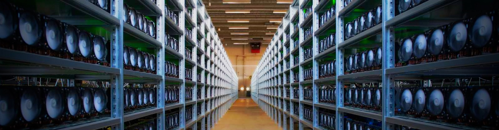
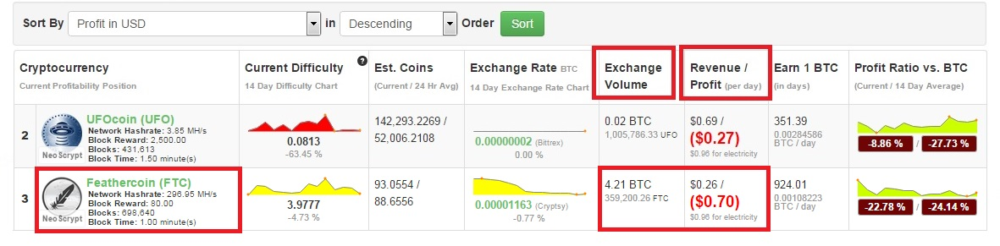

Майнинг биткоинов и других криптовалют для начинающих
Наверняка почти каждый, кто только начинает знакомиться с биткоином, хочет добыть его на собственном компьютере, а не купить на бирже криптовалют или как-то еще. Спешим вас огорчить: на сегодняшний день это уже нереально. Еще 2-3 года назад это было возможно, но затем крупные инвесторы увидели огромный потенциал получения прибыли от майнинг биткоинов и инвестировали крупные суммы в разработку специализированных чипов.
Это привело к тому, что появилось специализированные устройства, называемые ASIC (аббревиатура от англ. application-specific integrated circuit, «интегральная схема специального назначения»), предназначенные исключительно для майнинга криптовалют. Скорость майнинга биткоинов с помощью ASIC возросла в сотни раз, если сравнивать ее с обычными домашними компьютерами. Из-за роста мощности биткоин сети, повысилась сложность добычи криптовалюты, после чего добыть биткоины на стационарном компьютере стало уже невозможным.
Вот как выглядит завод по майнингу биткоинов:

Не стоит расстраиваться!
В связи с тем, что биткоин имеет открытый исходный код, независимые разработчики начали делать множество разных альтернативных криптовалют для самых различных целей. Такие криптовалюты обычно называют «форками» или «альткоинами». Цели для создания своей криптовалюты у каждого из разработчиков свои, как и отличия самого форка от своего прародителя. Это может быть, например, большее количество монет, которое можно добыть, или более высокая скорость переводов, у каждого форка свои особенные отличия. Например, вторая по популярности криптовалюта – это лайткоин (litecoin), он тоже является форком биткоина.
Так какой от этого толк? Все просто, из-за того, что ASIC-чипы выпускают только под специализированный алгоритм шифрования майнинга криптовалют, таких как SHA-256 (биткоин) и SCRYPT (лайткоин), некоторые независимые разработчики выпустили свои криптовалюты с другим алгоритмом, под который ASIC-устройств не существует. Это сделано для того, чтобы мощность сети, а следовательно и сложность добычи нового форка не росла до огромных значений. Получается, такие криптовалюты можно майнить на обычных компьютерах, а как это делать и сколько монет можно добыть, мы разберемся далее.
Майнинг биткоина не для нас, но зато есть другие криптовалюты!
Итак, что же нам нужно для майнинга криптовалюты, и что, собственно, будем добывать? Инструкия в несколько этапов:
Скорость майнинга любой криптовалюты, в том числе и самого биткоина, измеряется в хэшах в секунду. На момент написания статьи актуальной единицей измерения скорости майнинга является “kh/s” (килохэши в секунду). Нам с вами нужно узнать, сколько наш компьютер сможет выдать “kh/s”. Скорость майнинга зависит от характеристик вашей видеокарты, для примера возьмем NVIDIA GTX 580, средняя скорость майнинга на которой составит 220 kh/s. Посмотреть, какую скорость может выдать ваша видеокарта, можно по этой ссылке. Как понять, какую криптовалюту на сегодня лучше всего майнить? В этом нам помогут два популярных сайта: coinwarz и whattomine, где мы увидим сводные таблицы всех существующих сегодня криптовалют, которые можно добывать, а также алгоритмы их майнинга.
Для нас важные показатели – это “Revenue /Profit (per day)”, что значит «вознаграждение/прибыль (в день)» и столбец “Exchange Volume”, что значит объем монет, которые мы можем продать на бирже по такой цене, чтобы получить именно ту прибыль, которую видим в столбце “Revenue /Profit (per day)”. Советуем раз в день менять свои добытые монеты на биткоины, чтобы не терять прибыль, если вдруг цена криптовалюты пойдет вниз, а такое случается довольно часто.

Выбор криптовалюты для майнинга
Итак, мы выбрали самую выгодную для нас криптовалюту, на момент написания статьи это Feathercoin (FTC) с алгоритмом добычи NeoScrypt. Вписываем в таблицу свою скорость майнинга и получаем, что мы сможем добывать криптовалюту на 96 центов в день или $28 в месяц (без учета затрат на электроэнергию)
1. Выбор пула для майнинга.
После выбора криптовалюты для майнинга, нам нужно найти пул, в котором мы будем ее добывать. Конечно можно майнить «в соло», т.е. в одиночку, но эффективней все же объединиться с другими майнерами и майнить в пуле.
Пул – это сайт, на котором объединяются множество мелких майнеров и общими усилиями добывают криптовалюты. Чем больше мощности пула, тем больше шансов найти правильный блок и добыть больше монет. Сайты пулов обычно указывают на официальных сайтах криптовалют в разделе Pool или на тематических форумах, таких как Bitcoin Talk. Основные критерии выбора пула – это общая мощность добычи вашей криптовалюты и комиссия.
2. Выбор майнинг программы
Самые актуальные на сегодня майнинг программы – это sgminer и ccMiner.
Скачать sgminer для Windows здесь.
Скачать ccMiner для Windows здесь.
3. Запуск программы для майнинга
Настройка и запуск программы для майнинга заслуживает отдельной статьи, которая вскоре появится на нашем сайте.
4. Устанавливаем кошелек или регистрируемся на бирже
Остался последний шаг. Ваш понадобится кошелек, в который вы будете переводить свои добытые монеты. Официальный кошелек всегда можно скачать с официального сайта криптовалюты, но есть и другой, более простой вариант. Вы находите свою криптовалюту на сайте coinmarketcap, смотрите, на каких биржах она торгуется. Выбираете ту, где наибольший “Volume”, т.е. объем торгов. Регистрируетесь на этой бирже, открываете личный кабинет, находите вашу криптовалюту, нажимаете “Deposit”, чтобы внести средства, и получаете адрес для своих монет. Теперь после того, как в пуле вы намайните свои первые монеты, вы можете легко перевести их на свой кошелек на бирже. После этого выбор уже остается за вами: или вы сразу обмениваете их на в более стойкую криптовалюту – биткоин, или оставляйте их себе, в надежде, что их цена будет расти.
Также важно не забывать о комиссиях на вывод средств: чем чаще вы выводите криптовалюту с баланса пула, тем чаще оплачиваете эту комиссию.